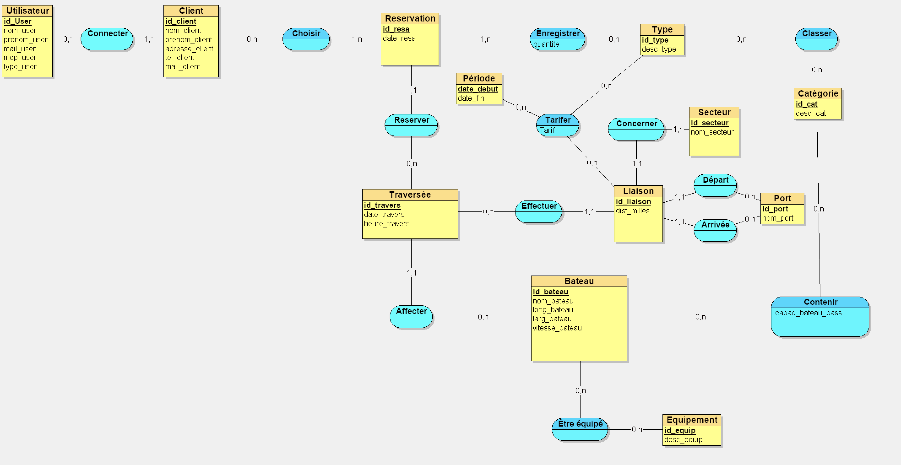
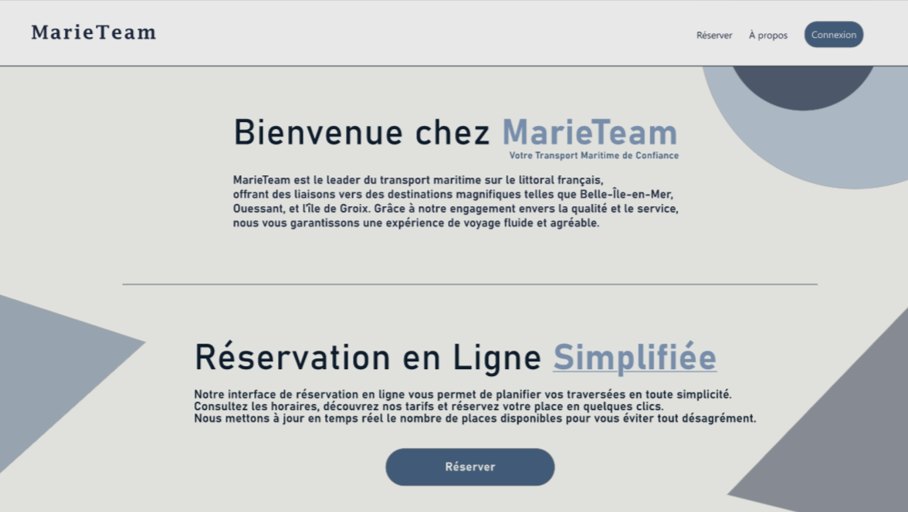

MarieTeam

Description du Projet
Ce projet consiste à développer une application web pour la compagnie MarieTeam, qui facilite la gestion et la consultation des liaisons maritimes, des tarifs, des horaires, ainsi que la réservation en ligne. Les informations sont générées dynamiquement à partir d'une base de données, et l'application est adaptée à une large gamme d'appareils (smartphones, tablettes, PC).
 Technologies Utilisées
- HTML5 et CSS3
- JavaScript (Framework utilisé : Vue.js)
- PHP (Backend)
- MySQL (Base de données)
- Git (Gestion de versions)
- Adobe XD (Maquette)
Fonctionnalités Principales
- Consultation des horaires des traversées et disponibilité en temps réel
- Réservation en ligne avec récapitulatif personnalisé
- Gestion des droits d’accès pour le personnel et les gestionnaires
- Compatibilité multiplateforme et responsive design
- Visualisation des statistiques pour les gestionnaires